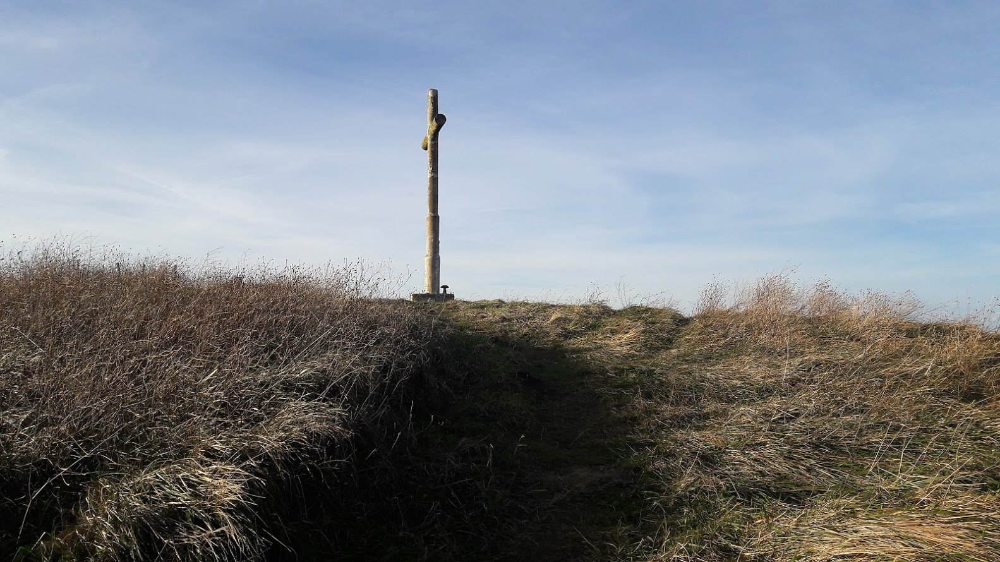

Ibilbidea
Ikastola, Indamendi, Elkano auzoa, Ikastola
Indamendi Zarauztik gertu dagoen mendia da, eta bertan Aia, Aizarnazabal eta Zestoako lurrak elkartzen dira. Nahiz eta tontorrera heldu aurretik malda gogor xamarra izan, laburra da, eta merezi du hau igotzeak bertatik kostalde eta mendialdeko bista zoragarriak ikusteko, besteak beste, Aia, Zumaia eta Zarauzko herriak ere bai. Itzuleran Aiako udal barrutikoa den Elkano auzotik pasako gara.
 1. arg.
1. arg.
Maria Etxetxiki kaletik irtengo gara, Salbatore Mitxelena ikastola aurretik (1. arg.). Ikastolatik abiatu eta trenbideari begira jarriaz, eskuinaldera bidegorri bat hasten da. Honen ondotik joango gara herri aldera, tren-geltokiraino.
Maria Eizagirre “Maria Etxetxiki” Zarautzen jaio zen 1886. urtean Añurbe baserrian, eta Etxetxiki baserrira ezkondu.
Zarautzen kale horrek bakarrik du emakume baten izena. 11 seme-alaba izan zituen. 21 urterekin hasi zen emagin-lanetan, eta bizitza guztia eman zuen lan horretan. Baina ez hori bakarrik: 11 seme-alaben arduraz gain, besteak beste, injekzioak jartzen zituen, hilzorian zeudenak zaindu, San Pelaioko ermita zaindu eta etxeko baratzean jarduten zuen.
«Iñurritza» eta «Abendats» ezizenez ezaguna, Zarautzen jaio zen 1919an, eta euskal olerkaria izan zen. Apaiz frantziskotarra zela, Frankismo garaian Espainiako Eliza ofizialak jarraitzen zuen ildoarekin ados ez zegoenez eta hizkuntzaren eta hiztunen egoera itota ikusten zuenez, bere burua misioetara erbesteratzea erabaki zuen.
Mitxelenaren idazlanak euskararekiko eta Euskal Herriarekiko samin arduraz beterik daude eta bere olerkigintza bertsogintza tradizionaletik oso hurbil dago.
Tren-geltokira iristean trenbide ondotik doan bidetik jarraituko dugu (2. arg.), haur-parke baten ondotik igaro eta San Frantzisko kalea topatu arte.
3. arg.San Frantzisko kalean ezkerraldera egingo dugu trenbide azpitik pasatzeko (3. arg.).
 4. arg.
4. arg.
Ondoren Azken Portu auzora sartuko gara (4. arg.). Zuzen joan bidegorri baten ondotik biribilgunera iritsi arte.
 5. arg.
5. arg.
Biribilgunean zebra-bidea pasa ( 5. arg.) aldapatxo bat jaitsi eta berriro ere trenbide azpitik igaro. Han bidegorria har dezakegu erreferentzia moduan.
6. arg.Trenbidearen azpitik pasa eta ezkerraldera egingo dugu bidegorriaren parean (6. arg.) hurrengo biribilgunea aurkitu arte (500 m).
7. arg.Berriro ere trenbide azpitik igaro (7. arg.) eta hilerri aldera egingo dugu maldan gora. Marra zuri-horiak ikusiko ditugu ia Elkano auzoraino. Hemen hasten da aldapa gora.
8. arg. 9. arg.Bidean goazela, urrutira, Indamendi, Txatxarro eta Pagoetako mendi-tontorrak azalduko zaizkigu (8 eta 9. arg.).
 10. arg.
10. arg.
San Blas ermita (10. arg.). Eskuinaldeko bide nagusia hartu eta handik berehala ezkerraldekoa hartuko dugu. Marra zuri-horiak jarraitu.
11. arg.Aldapatxo gogor baina motz baten ondoren, Meagatik Elkanora doan errepidearekin egingo dugu topo (11. arg.). Ezkerraldera joan.
 12. arg.
12. arg.
Santa Kruz ermita (12. arg.). Elkanora doan errepidea utzi eta Indamendira eramango gaituen bidexka jarraituko dugu eskuinera. Hasieran bi bidexka bezala aurkituko dituzue, baina eskuinekoa hartu.
 13. arg.
13. arg.
Metro batzuk egin ondoren zutoin batean dago Indamendiko bidea erakusten digun seinalea (13. arg.).
14. arg.Seinalea igaro eta metro batzuetara arreta pixka bat jarri behar da. Une batean bidexka utzi eta belardiko bidexkara sartu behar da, eskuinaldera (14. arg.). Gora begiratzen baduzue, ikusiko duzue tontorrera eramango gaituen bidea. Animo, azken txanpa hartuko dugu eta. Lasai bota pausoa, hauspoa berotu gabe, ez dago presarik eta.
15. arg. 16. arg. 17. arg.Iritsi gara gailurrera (15. arg.). Orain da deskantsua hartu eta indarrak berritzeko unea. Gozatu paisaiaz (16 eta 17. arg.).
Indarrak berritu ondoren, igoerako bidetik itzuliko gara, gorakoan Indamendiko bidea adierazten zuen zutoineraino.
18. arg.Orain, igoerako bidea jarraitu ordez, zuhaixka baten ondotik behera doan bidexka hartuko dugu (18. arg.). Ez egin ez ezkerrera, ez eskuinera. Elkano auzora iritsiko gara.
19. arg.Elkano auzoan, eliza ondotik doan errepidea hartuko dugu (19. arg.), dena aldapa behera Zarauzko industrialdera iritsi arte. Une batean Urdaneta auzora doan errepidearekin egingo dugu topo, baina guk ezkerraldera egingo dugu.
20. arg.Industrialdean, espaloitik goazela, herriko Garbigunearen ondotik jarraituko dugu (20. arg.), eta etxe batekin aurrez aurre gaudenean ezkerraldera egingo dugu, autopista aldera.
 21. arg.
21. arg.
 22. arg.
22. arg.
Autopista azpitik pasa eta gero (21. arg.), bidea gurutzatuko dugu eta hor hasten den bidegorriaren ondotik joango gara (22. arg.) Orokieta ikastetxeraino. Segi bidegorriaren ondotik une oro. Orokieta ikastetxera iristean kalea gurutzatu eta aurrera egin errekaren ezkerraldetik.
 23. arg.
23. arg.
 24. arg.
24. arg.
Suhiltzaileen etxe amaieran, ezkerraldera egin (23. arg.), kalea gurutzatu eta eskuinaldera hartu, gurutzatu berriro kalea eta Ikastolaraino iritsiko zarete trenbide azpitik pasa eta gero (24. arg.). Amaiera.